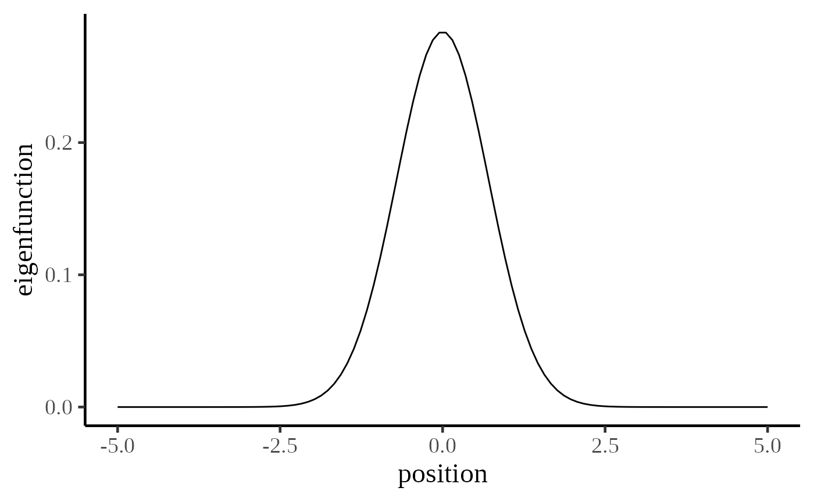
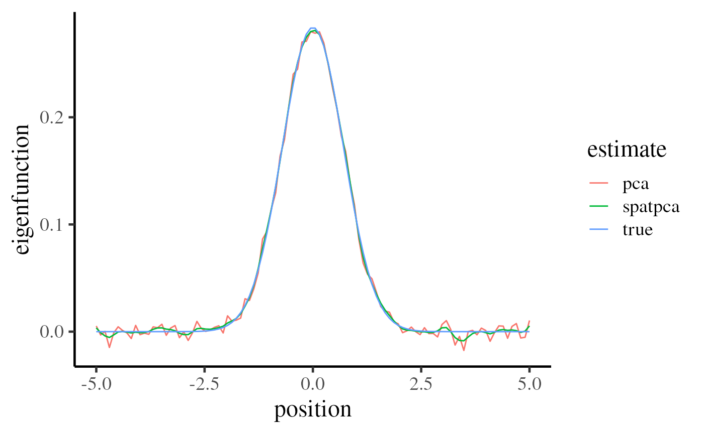
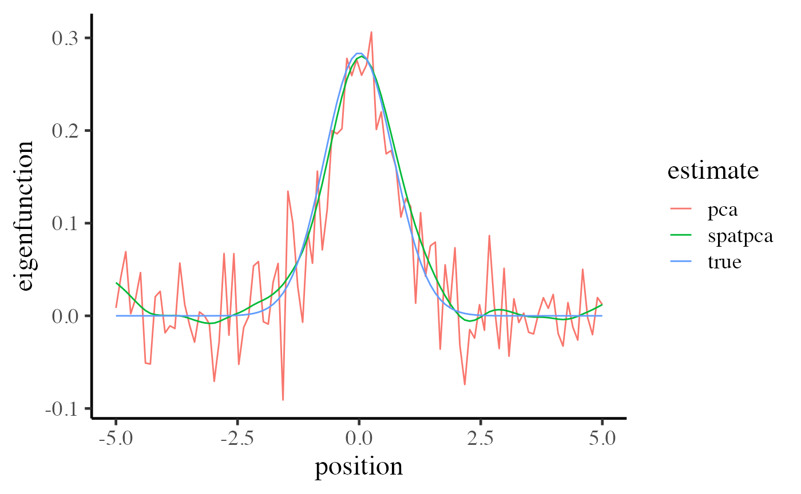

vignettes/demo-one-dim-location.Rmd
demo-one-dim-location.RmdWe have two objectives 1. Demonstrate how SpatPCA captures the most dominant spatial pattern of variation based on different signal-to-noise ratios. 2. Represent how to use SpatPCA for one-dimensional data
The underlying spatial pattern below indicates realizations will vary dramatically at the center and be almost unchanged at the both ends of the curve.
set.seed(1024)
position <- matrix(seq(-5, 5, length = 100))
true_eigen_fn <- exp(-position^2) / norm(exp(-position^2), "F")
data.frame(
position = position,
eigenfunction = true_eigen_fn
) %>%
ggplot(aes(position, eigenfunction)) +
geom_line() +
base_theme
We want to generate 100 random sample based on - The spatial signal for the true spatial pattern is distributed normally with - The noise follows the standard normal distribution.
We can see simulated central realizations change in a wide range more frequently than the others.
SpatPCA::spatpca
cv <- spatpca(x = position, Y = realizations)
eigen_est <- cv$eigenfnThere are two comparison remarks 1. Two estimates are similar to the true eigenfunctions 2. SpatPCA can perform better at the both ends.
data.frame(
position = position,
true = true_eigen_fn,
spatpca = eigen_est[, 1],
pca = svd(realizations)$v[, 1]
) %>%
gather(estimate, eigenfunction, -position) %>%
ggplot(aes(x = position, y = eigenfunction, color = estimate)) +
geom_line() +
base_theme
It is hard to see a crystal clear spatial pattern via the simulated sample shown below.
The following panel indicates that SpatPCA outperforms to PCA visually when the signal-to-noise ratio is quite lower.
cv <- spatpca(x = position, Y = realizations)
eigen_est <- cv$eigenfn
data.frame(
position = position,
true = true_eigen_fn,
spatpca = eigen_est[, 1],
pca = svd(realizations)$v[, 1]
) %>%
gather(estimate, eigenfunction, -position) %>%
ggplot(aes(x = position, y = eigenfunction, color = estimate)) +
geom_line() +
base_theme